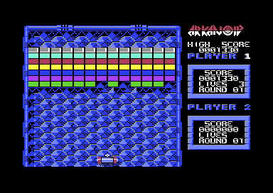

<meta charset="utf-8">
<meta name="viewport" content="width=device-width, initial-scale=1">
<title>Arkanoid</title>
<link rel="preconnect" href="https://fonts.googleapis.com">
<link rel="stylesheet" href="https://fonts.googleapis.com/css2?family=Lato:wght@400;700;900&family=IBM+Plex+Mono:wght@400;500&display=swap">
<style>
:root{
  --bg:#23262d; --paper:#e9e7e1; --surface:#ffffff; --surface-2:#f1efea; --line:#d5d3cc; --line-soft:#e0ded8;
  --ink:#2f3136; --ink-soft:#55585f; --ink-mute:#80838a;
  --link:#1f5fa8; --link-hover:#154480; --accent:#1f5fa8;
  --amber:#c25a00; --cyan:#1f5fa8; --coral:#d04a3a; --green:#2a8a4a; --violet:#4a5bd6; --hl:#fff0c2;
  --chip:#2f3136; --chip-ink:#ffffff;
  --c64blue:#40318d; --c64grey:#686868;
  --fd:'Lato',system-ui,sans-serif; --fb:'Lato',system-ui,sans-serif; --fm:'IBM Plex Mono',ui-monospace,Menlo,monospace;
  --col:1080px; --gx:68px; --fs:17px; --lh:1.6; --hw:900; --h1:46px; --h2:26px; --sy:48px; --pp:26px; --r:10px;
  --plate-shadow:0 1px 2px rgba(0,0,0,.05),0 4px 14px rgba(0,0,0,.05);
}
*{box-sizing:border-box}
html{background:var(--bg);min-height:100%}
body{background:var(--paper);color:var(--ink);font-family:var(--fb);font-size:var(--fs);line-height:var(--lh);max-width:var(--col);margin:0 auto;min-height:100vh;padding:0 0 4rem}
h1,h2,h3{font-weight:var(--hw);letter-spacing:-.01em;text-wrap:balance;color:var(--ink);margin:0}
h3{font-size:19px;margin:26px 0 8px}
.wrap{padding:0 var(--gx)}
.hero{padding:48px var(--gx) 8px;text-align:left}
.eyebrow{font-family:var(--fm);font-size:12px;letter-spacing:.08em;text-transform:uppercase;color:var(--ink-mute);margin:0 0 10px}
.hero h1{font-size:var(--h1);line-height:1.15;letter-spacing:-.02em;margin:0 0 14px}
.hero .sub{margin:0 0 .6em;color:var(--ink-soft)}
section{padding:var(--sy) 0 24px}
section:last-of-type{border-bottom:none}
.fig{font-family:var(--fm);font-size:12px;letter-spacing:.08em;text-transform:uppercase;color:var(--ink-mute);margin:0 0 10px}
h2.t{font-size:var(--h2);margin-bottom:12px}
.lede{color:var(--ink-soft);margin:0 0 30px}
.plate{background:var(--surface);border:1px solid var(--line);border-radius:var(--r);padding:var(--pp);box-shadow:var(--plate-shadow);margin:0 0 22px}
.cap{font-size:14px;color:var(--ink-mute);margin-top:14px;line-height:1.55}
.cap b{color:var(--ink);font-weight:700}
code{font-family:var(--fm);font-size:.82em;background:var(--chip);color:var(--chip-ink);border-radius:4px;padding:2px 6px;white-space:nowrap}
canvas{image-rendering:pixelated;max-width:100%;display:block}
.row{display:flex;flex-wrap:wrap;gap:8px;align-items:center;margin:12px 0 0}
button{font-family:var(--fm);font-size:13px;background:var(--surface-2);color:var(--ink);border:1px solid var(--line);border-radius:6px;padding:6px 11px;cursor:pointer}
button:hover{border-color:var(--ink-mute)}
button.on{background:var(--chip);color:var(--chip-ink);border-color:var(--chip)}
input[type=range]{width:220px}
.lab{font-family:var(--fm);font-size:13px;color:var(--ink-soft)}
table{border-collapse:collapse;width:100%;font-size:15px;margin:8px 0 0}
th,td{text-align:left;padding:6px 10px;border-bottom:1px solid var(--line-soft);vertical-align:top}
th{font-size:12px;font-family:var(--fm);text-transform:uppercase;letter-spacing:.06em;color:var(--ink-mute);font-weight:500}
.scroll{overflow-x:auto}
.bands{font-family:var(--fm);font-size:13px;line-height:1.5;margin:12px 0 0;padding:0;list-style:none}
.bands li{padding:4px 8px;border-left:3px solid transparent;cursor:default}
.bands li.hl{background:var(--hl);border-left-color:var(--amber)}
.two{display:grid;grid-template-columns:auto 1fr;gap:22px;align-items:start}
.out{font-family:var(--fm);font-size:14px;background:var(--surface-2);border-radius:6px;padding:10px 12px;margin:12px 0 0;min-height:3.2em}
.stages{display:grid;grid-template-columns:repeat(16,1fr);gap:3px;margin:12px 0 0}
.stages button{padding:5px 0;font-size:12px}
.stages button.hz{border-bottom:3px solid var(--amber)}
.msg{font-size:14px;color:var(--coral)}
@media (max-width:760px){:root{--gx:16px;--h1:36px;--pp:14px}.two{grid-template-columns:1fr}.stages{grid-template-columns:repeat(8,1fr)}}
.overview-shot{margin:22px 0 0}.overview-shot img{max-width:100%;height:auto;image-rendering:pixelated;border-radius:6px}
.overview-shot figcaption{font-size:14px;color:var(--ink-mute);margin-top:8px}
.overview-links{display:flex;flex-wrap:wrap;gap:10px;margin:22px 0 0}
.overview-links a{font-family:var(--fm);font-size:13px;background:var(--surface);border:1px solid var(--line);border-radius:6px;padding:6px 12px;color:var(--link);text-decoration:none}
.sources{font-size:14px;color:var(--ink-mute)}
</style>
<!-- tabs -->
<header class="hero">
  <p class="eyebrow">Commodore 64 · 1987 · Imagine</p>
  <h1>Arkanoid</h1>
  <p class="sub">Arkanoid is a brick game: a bat at the bottom of the screen, a ball, and a wall of bricks to knock down one hit at a time. Taito took the idea of Atari's Breakout and added coloured, silver and indestructible gold bricks, capsules that change the bat or the ball, enemies that drift down from the top, and a boss at the end. Imagine's 1987 conversion for the Commodore 64 keeps all 33 rounds, and Martin Galway's music. Inside, the capsules are not shuffled: a frame counter and the number of lives left decide which one falls.</p>
</header>
<main class="wrap">

<section id="game">
  <p class="fig">01 · The game</p>
  <h2 class="t">Knock down the wall, catch what falls</h2>
  <p>The player steers the Vaus, a small spacecraft that serves as the bat, left and right along the bottom of the playfield. A ball bounces between it, the three walls and the bricks; each brick it touches breaks, and when the last breakable brick is gone the round ends. Coloured bricks break at once and are worth 70 to 130 points by colour. Silver ones take two hits in the first rounds and up to five later on. Gold ones never break. Missing the ball costs a life, and the game starts with four.</p>
  <p>Some bricks drop a capsule as they break, and catching it with the Vaus gives a power: S slows the ball, C catches it, E widens the Vaus, D splits the ball into three, L fits a laser, B opens an exit in the right wall that ends the round, and P adds a life. Enemies drift in through a gate in the top wall, and the ball, the laser or the Vaus destroys them. After 32 rounds of bricks comes round 33, where Doh, a giant stone head, has to be hit 23 times while it fires back.</p>
  <p>Before play a menu chooses the controller: a joystick, the keyboard, paddles or the Neos mouse, for one or two players taking turns. The story screen sets the scene: the mothership Arkanoid has been destroyed, and the Vaus has escaped from it only to be trapped in space.</p>
  <figure class="overview-shot"><figcaption>Round 1 in an emulator: a row of silver bricks above six rows of coloured ones, the Vaus at the bottom, and the two players' panels on the right.</figcaption></figure>
  <p class="overview-links"><a href="mechanics.html">How it works</a><a href="levels.html">Maps / levels</a><a href="music.html">Music</a></p>
</section>

<section id="release">
  <p class="fig">02 · The release</p>
  <h2 class="t">A Taito arcade hit, converted by David Collier with music by Martin Galway</h2>
  <p>Taito released Arkanoid in Japanese arcades in July 1986. It was designed by Akira Fujita and Hiroshi Tsujino of Taito's Yokohama Research Institute, and it took the idea of Atari's Breakout from a decade earlier and built a full game around it. In Japan it was the highest-grossing table arcade game of 1987, and in the United States the highest-grossing conversion kit of the year.</p>
  <p>In Europe the home computer versions were published under Imagine, the label that Ocean Software kept for its arcade licences after taking over the Liverpool company in 1984. The Commodore 64 version came out in 1987, programmed by David A. Collier with music by Martin Galway; the title picture is signed "Jones". The game names none of them: its menu says only "© TAITO 1986 © IMAGINE 1984".</p>
  <p>Galway is credited with the first published use of sampled sound on the Commodore 64, in Arkanoid's theme. He later said the drums came from a drum synthesizer package and that he did not yet understand real sample data, and the code agrees: each drum routine writes a running sum, not a recorded sample, to the sound chip's volume register while the tune plays on the three voices (<a href="mechanics.html">How it works</a>). The <a href="music.html">Music</a> tab plays the tunes from the game's own driver.</p>
  <p class="sources">Sources: Wikipedia, "Arkanoid" and "Martin Galway"; C64-Wiki, "Arkanoid"; the Video Game Music Preservation Foundation wiki, "Arkanoid (C64)", read on 7 October 2026. Ocean's takeover of Imagine is from C64-Wiki, "Ocean Software", as quoted in web search results on 7 October 2026. The menu text, the signature and the drum routines were read from the game.</p>
</section>

<section id="reception">
  <p class="fig">03 · Reception</p>
  <h2 class="t">Reviews between 66 % and 85 %</h2>
  <p>Magazines liked the conversion without raving about it. Zzap!64's three reviewers, Gary Penn, Julian Rignall and Steve Jarratt, gave it 80 % in April 1987, and the magazine gave it 80 % again in March 1990. Commodore User gave it 8 out of 10 in a review by Eugene Lacey.</p>
  <table>
    <tr><th>Magazine</th><th>Issue</th><th>Score</th></tr>
    <tr><td>Happy Computer</td><td>Game special 3/86</td><td>85 %</td></tr>
    <tr><td>Commodore User</td><td>42, March 1987</td><td>8/10</td></tr>
    <tr><td>Zzap!64</td><td>24, April 1987</td><td>80 %</td></tr>
    <tr><td>ASM</td><td>5/87</td><td>8/12</td></tr>
    <tr><td>Zzap!64</td><td>59, March 1990</td><td>80 %</td></tr>
    <tr><td>Commodore Force</td><td>7, July 1993</td><td>66 %</td></tr>
    <tr><td>Commodore Force</td><td>9, September 1993</td><td>68 %</td></tr>
  </table>
  <p>The arcade game did better with the awards: Gamest named it one of the four best games of 1986. Players on Lemon64, the Commodore 64 games database, rate the conversion at about 7.8 out of 10.</p>
  <p class="sources">Sources: the table is C64-Wiki's, "Arkanoid", read on 7 October 2026; the Zzap!64 reviewers and Commodore User's reviewer are from Lemon64 and Amiga Magazine Rack as quoted in web search results on 5 and 7 October 2026. Wikipedia dates the Commodore User review February 1987 where C64-Wiki says issue 42, March 1987. Lemon64's page refused to open; its rating is from search results on 7 October 2026. Wikipedia also lists scores from Computer and Video Games and The Games Machine without saying which version they reviewed, and they are left out.</p>
</section>

</main>
<footer style="margin:16px 0 0;padding:22px var(--gx) 0;border-top:1px solid #e0ded8;font-family:'IBM Plex Mono',ui-monospace,Menlo,monospace;font-size:12px;color:#80838a"><a href="/kit.html" style="color:#1f5fa8;text-decoration:none">Kit changelog</a> · <a href="https://github.com/gamesexplained/gamesexplained" style="color:#1f5fa8;text-decoration:none">GitHub</a> · <a href="https://discord.gg/3V9GWyRDWV" style="color:#1f5fa8;text-decoration:none">Discord</a><br>© Games Explained contributors. Write-ups, facts and symbol maps are available under <a href="https://creativecommons.org/licenses/by-sa/4.0/" style="color:#1f5fa8;text-decoration:none">CC BY-SA 4.0</a>; code under <a href="https://opensource.org/licenses/MIT" style="color:#1f5fa8;text-decoration:none">MIT</a></footer>
